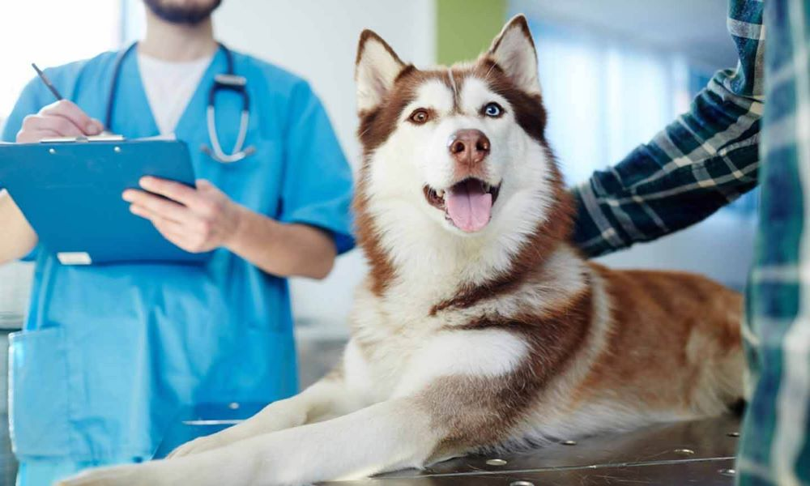
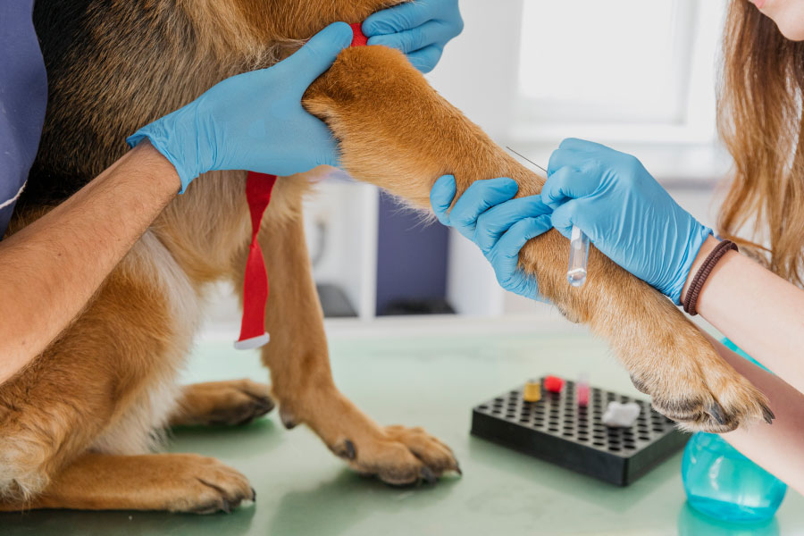
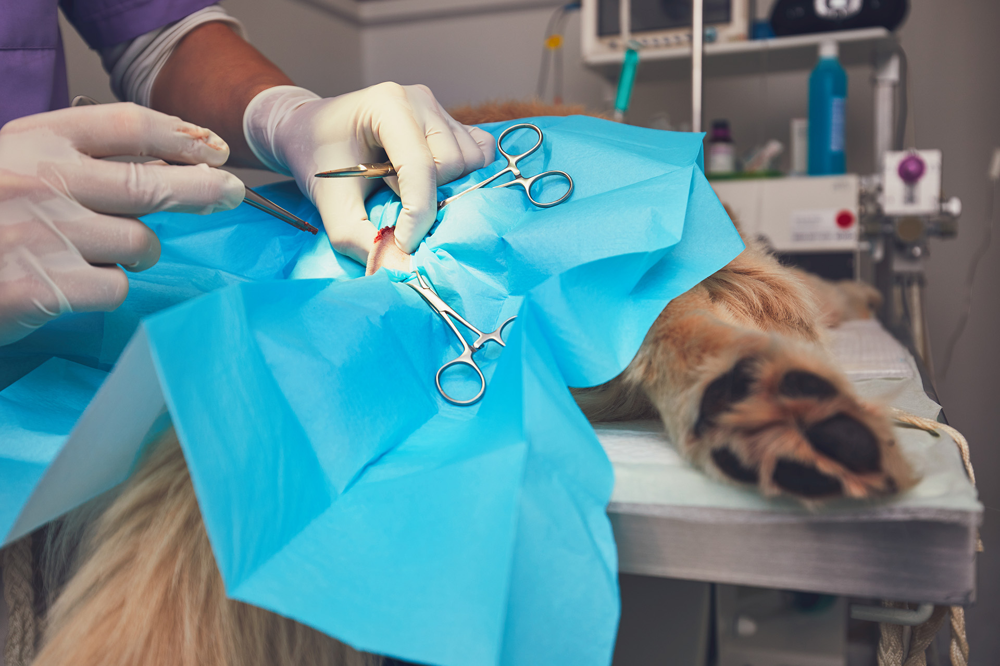
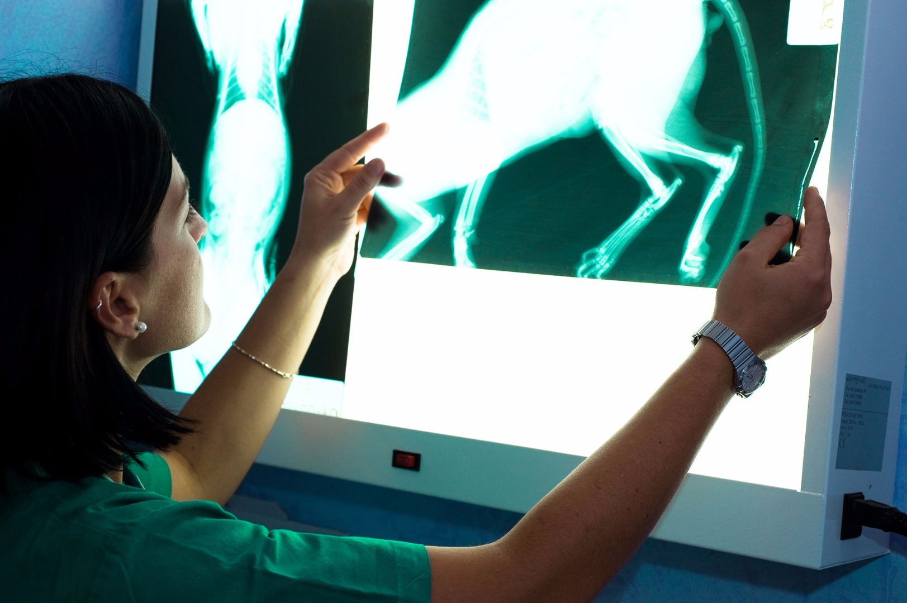
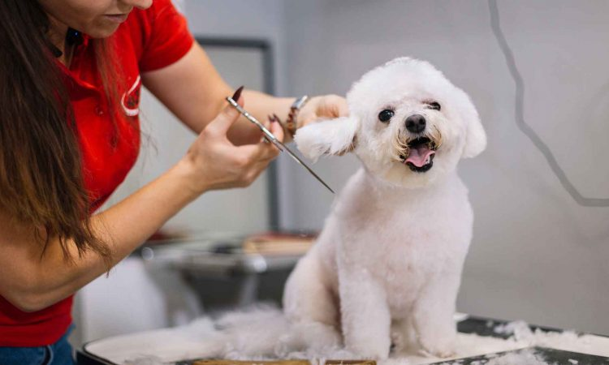
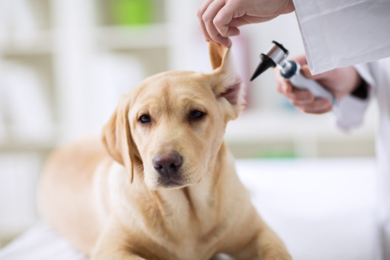

En nuestra responsable práctica profesional es indispensable ofrecerle a nuestros clientes y a sus mascotas el pronto y efectivo diagnóstico, por eso, la ultrasonografía es el servicio idóneo.
Si se sospecha de una masa o tumor es fácil de diagnosticar por medio de un ultrasonido,
así como diagnósticos específicos como gastrointestinal, urinario y reproductor y problemas
agudos de tórax o abdomen.

Contamos con exámenes de hemograma con frotis, incluida la
observación de hemoparásito.
El hemograma es un servicio básico que permite la rápida atención e impresión diagnósticapara el estado básico del paciente, sea por algún problema de deshidratación, anemia,inmunosupresión, infección viral, bacteriana o algún síndrome asociado a enfermedades hematológicas, permitiendo una rápida atención y respuesta sobre el paciente y su cuadroclínico inmediato, permite además una valoración sobre 3 líneas celulares, eritrocitos“glóbulos rojos”, leucocitos “glóbulos blancos” y plaquetas, permitiendo saber de manerapresuntiva la condición, monitoreo y estabilidad de cada paciente. El frotis sanguíneo permite observar e identificar cuando uno de estos valores están en alerta tales como la cuantificación de una anemia, parásitos intracelulares, infecciones bacterianas y virales, en caso de plaquetas también nos permite saber si el paciente está generando una coagulopatía que pueda atentar con el paciente.

Contamos con un quirófano equipado con anestesia inhalatoria, electrobisturí, monitor de
signos y cirujanos calificados para realizar procedimientos como cirugía del sistema urinario,
digestivo, respiratorio, ocular, columna vertebral, de tórax, ortopédica, tejidos blandos, reconstructiva, oral y maxilofacial y radiografías con medio de contraste.

Un mejor diagnóstico para su mascota es posible ahora por medio de nuestro servicio de
rayos X digitales, que a través de la alta tecnología se obtienen mejores imágenes de
tejidos blandos y duros, detección de hernias, anomalías en estómago, obstrucciones
intestinales o presencia de cuerpos extraños en intestinos.

En nuestra responsable práctica profesional es indispensable ofrecerle a nuestros clientes y a sus mascotas el pronto y efectivo diagnóstico, por eso, la ultrasonografía es el servicio idóneo.
Si se sospecha de una masa o tumor es fácil de diagnosticar por medio de un ultrasonido,
así como diagnósticos específicos como gastrointestinal, urinario y reproductor y problemas
agudos de tórax o abdomen.

Quedarse en casa y atender profesionalmente a su mascota es posible por medio de nuestra cobertura veterinaria domiciliaria.
La valoración y cuidado efectuado por nuestros médicos altamente calificados se realiza en el área metropolitana o donde necesite este servicio.
